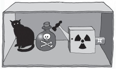

Kuantum fiziği
ve gerçekliğin doğası
Sene 1925; Buster Keaton ile Charlie Chaplin’in altın yılları. Dünya, Chaplin’in ertesi ay gösterime girecek olan, o zamana kadarki en güzel filmi olarak baş tacı edilen Altına Hücum’un heyecanını yaşıyor. Almanya’nın Hamburg kentinde fizik öğrencisi olan zavallı Wolfgang Pauli ise sıkıntı içinde. Bir meslektaşına “Şu sıralar fizik yine karman çorman, neresinden bakarsan bak benim için çok karmaşık,” diye yazıyor. “Keşke film yıldızı ya da öyle bir şey olsaydım da fiziğin lafını hiç duymamış olsaydım.”
Pauli çok haklıydı: Fizik karman çormandı. Yeni oluşturulmuş kuantum kuramının neden bahsettiğini kimse anlamıyordu. Deneyler enerjinin bölünüp görünmez paketler, yani kuantalar oluşturması gerektiğine işaret ediyordu; ama neden böyle olduğunu kimse söyleyemiyordu. Sonra, birkaç ay sonra Avusturyalı fizikçi Erwin Schrödinger bu kargaşayı giderdi: Bu gelişme bir kadınla birlikte (karısı değildi bu kadın) İsviçre Alpleri’nde bir geziye çıktığında gerçekleşmiş, gezi hayali bir kedinin akıbetinin sorgulanmasıyla son bulmuştu. Bu hayali yaratık çabucak bilim tarihinin en ünlü hayvanı olup çıktı. Schrödinger’in kedisinin hikâyesinden kuantum kuramının tuhaflığı akar, hikâyenin muammadan farkı olmayan niteliği de bugüne kadar bozulmadan kalmıştır.
Schrödinger’in gerçekleştirdiği atılımın kökeni Louis de Broglie adlı Fransız bir fizikçinin çalışmalarına uzanmaktadır. Broglie 1923’te göreliliği, genel olarak çok büyük ölçeklerdeki mesafe ve hızın fiziği ile yeni doğmuş kuantum kuramını, çok küçük olanın fiziğini bir araya getirmişti. Sonuçta ortaya çıkan basit bir denklem olmuştu. De Broglie hareket eden her parçacığın aynı derecede sağlam bir biçimde dalga olarak tanımlanabileceğini söylüyordu. Her dalga da hareket eden parçacık olarak tanımlanabilirdi. Önüne konulduğunda Einstein bu çalışmayı “bir hayli ilginç” bulmuştu. Fakat iki yıl sonra Schrödinger, bu çalışmanın bundan çok çok daha fazlası olduğunu göstermişti.
Erwin Schrödinger 1925’te Noel tatili sırasında, De Broglie’nin geliştirdiği formülün matematiksel açılımları üzerinde çalışıyordu. Karısını Zürih’te bırakan Schrödinger, sevgilisini İsviçre dağlarındaki bir şatoya götürdü. Onun açısından olağandışı bir durum değildi bu; öyle görünüyordu ki karısı ve o evlilikleri boyunca böyle birkaç “düzenleme” gerçekleştirmişlerdi. Her ne olduysa bu gezinin ilham verici olduğu açıktı. Schrödinger dağlardan Schrödinger dalga denklemi olarak bilinen denklemle döndü. Bu denklem, bir kuantum parçacığının dalga olarak değerlendirildiğinde nasıl davrandığını anlatmaktadır.
Schrödinger denklemi, kuantum durumlarının nereden geldiğini anlamanın bir yolunu sunar. Örneğin Bohr’un atom modelinde, çekirdeğin çevresinde dolanan bir elektron ancak belli enerji durumlarında olabilir. Schrödinger’in denklemi bu “kuantize” enerjilerin neler olduğunu işlemenin bir yolunu da sunar: Elektron ancak ve ancak dalgası, yörünge etrafında dolanırken belli sayıda salınımı gerçekleştirdiğinde kararlıdır.
Kuantize enerjilere dair ellerinde uygun bir açıklama bulunmayan fizikçiler açısından bu bir devrimdi. Fakat denklem aynı zamanda, bir elektronun enerjisinin belli bir durumda zaman içinde nasıl gelişeceğini ortaya çıkarmanın da bir yolunu sunuyordu. Aynı zamanda parçacığın konumunu, yani momentumunu ya da birbiriyle etkileşim içindeki iki parçacığın kuantum durumlarının nasıl bir hal alacağını da aynı ölçüde iyi bir biçimde ortaya koyuyordu. Bu denklem bir başyapıt olarak baş tacı edilmişti, ama bir tek sorun vardı.
Dalga denkleminin aslında ne anlama geldiği konusunda kimse hemfikir değildi. Parçacıkların aslında dalga olduğu anlamına mı geliyordu? Schrödinger böyle olması gerektiğine inanıyor, daha doğrusu böyle olmasını umuyordu. Einstein da ona arka çıkıyordu. Fakat diğerleri buna karşı çıkıyorlardı. Örneğin Göttingen Üniversitesi fizikçilerinden Max Born dalga denklemi çözümlerinin olasılıklardan başka bir şeye yol açmayabileceğini göstermişti. Belli bir uzayda bir parçacık bulma olasılığından ya da bir parçacığın belli bir momentuma sahip olması olasılığından başka bir şeye yol açmayabileceğini.
Bu bakış açısına göre bu denklem, incelemeye aldığımızda kuantum sistemi hakkında neler bulabileceğimize dair bir rehberdi; fakat sistemin doğasının aslında ne olduğuyla ilgili söyleyecek pek bir şeyi yoktu. Başka bir deyişle bize kuantum nesnesinin bir tanımını değil, onun hakkında neler bilebileceğimizin bir tanımını veriyordu. Felsefi olarak bu bir kâbustu, Einstein bundan nefret ediyordu, Schrödinger de öyle.
Olumlu Düşünmek
Öte yandan Niels Bohr buna bayılıyordu. Bohr Kopenhag’da bulunuyordu; burada Carlsberg bira fabrikasının finanse ettiği bir kurumu yönetiyordu. Bir “pozitivistti.” Onun felsefesine göre bir şeyin nesnel özelliklerinden bahsetmek saçmaydı; çünkü bir şey hakkında ancak öznel ölçümlerle bilgi edinebilirdiniz. Bu ölçümler de her zaman bilebileceğimiz şeyleri sınırlardı.
Bohr, Schrödinger’in dalga denkleminin ardındaki nihai gerçekliğin ne dalga ne de parçacık olduğunu düşünüyordu; bu denklem bu yüzden anlayabileceğimiz terimlerle tanımlanamıyordu. Bohr’un buna verdiği cevap hiçbir şeyin ölçülünceye kadar var olmadığını varsaymak olmuştu. Fakat bir ölçüm yapıldığında, ölçümün tipi ne gördüğümüzü de belirleyecekti. Bir şeyin uzaydaki konumunu tespit eden bir alet kullanırsanız uzayda belirgin bir konumu olan bir şey, parçacık dediğimiz oluşumu görecektiniz.
Einstein “kuantum kuramının” bu “Kopenhag yorumunun” bir tek parçasını bile benimsemeyecekti. Büyük çalışması görelilik, özellikle gözlemciden bağımsız bir kuram yaratmak için oluşturulmuştu. Göreliliğin ana teması, üzerlerinde kim çalışıyor olursa olsun fizik kanunlarının aynı olması gerektiğiydi. Evrenin fiziksel niteliğinin, bizim ona nasıl yaklaştığımıza bağlı olması, Einstein’ın duyarlılığını derinden yaralıyordu.
Einstein’ın sorunu şurada yatıyordu: Kuantum nesnelerinin bir dalga denklemi kullanarak tanımlanması, dalgalar gibi, kuantum nesnelerinin de birbirleriyle iç içe geçebildiği anlamına gelir. İki dalga birbiriyle etkileşime girdiğinde bir “süperpozisyon” ortaya çıkar; bu süperpozisyon herhangi bir noktadaki dalgaların toplamıdır. İki dalga tepesi kesiştiğinde, örtüşme her iki tepe noktasından da büyüktür. İki dalga dip noktası kesiştiğinde, dalganın dip noktası derinleşir. Bir dalga tepesi ve dip noktası kesiştiğinde, sonuç düzlük olur.
Peki, bu durum kuantum parçacıklarına nasıl uyarlanır? Schrödinger’in dalga denklemi, kuantum parçacıklarının doğru koşullarda, farklı hallerin örtüşmesinde var olduğunu söylemektedir. Dolayısıyla bir metal yüzük içinde dolanan bir elektron aynı anda hem saat yönünde hem saat yönünün tersine dolanıyor olabilir. Bir ışık fotonu aynı anda birçok yönde polarize edilebilir, yani fotonun elektrik alanı yönlendirilebilir. Bir kuantum süreciyle çürüyen radyoaktif bir atom “çürümüş” ve “çürümemiş” süperpozisyon durumunda olabilir. Kulağa anlamsız gelse de kuramın ileri sürdüğü şey budur.
Einstein ile Schrödinger’in kuramda eksik bir şeyler olduğunu söylemiş olmalarının sebebi de budur. Schrödinger bu meseleyi iyice kafaya çakmak için kediyi ortaya atmıştır. 1935’te bir dergiye gönderdiği bir makalede “Son derece saçma vakalar düzenlenebilir,” diye yazıyordu. “Bir kedi çelik bir kutuya kapatılmıştır,” diye devam ediyor, bu saçma vakayı ayrıntılarıyla tarif etmeye girişiyordu; böylece bilmeden kuantum kuramının gelecekteki yorumlarının köşetaşını oluşturuyordu.
Kutunun İçindeki Kedi
Kapalı çelik kutuda Schrödinger’in kedisiyle birlikte küçük bir parça radyoaktif malzeme ve Geiger sayacı bulunmaktadır. Herhangi bir anda, radyoaktif maddenin bir parçacık salması, böylece Geiger sayacında bir elektrik akımını tetiklemesi olasılığı vardır. Fakat Schrödinger Geiger sayacını, bir çekici serbest bırakacak şekilde yerleştirmiştir; öyle ki radyoaktif bir salım tespit ettiğinde çekiç bir hidrosiyanik asit şişesini kıracak, şişeden kedinin ölümüne yol açacak buharlar çıkacaktır.

SCHRÖDİNGER’İN KEDİSİ DÜŞÜNCE DENEYİ
Schrödinger’e göre, kediyi oluşturan bütün atomlar da dahil olmak üzere, bütün bu sistemin kuantum tanımı “bunu hem diri hem ölü kediyi (ifadenin kusuruna bakmayın) eşit parçalarda karıştırılmış ya da silinmiş bir biçimde içererek ifade edecektir.” Mantık sağlamdır. “Çürümüş” ve “çürümemiş” süperpozisyonundaki (üstüste binme) radyoaktif atomun kararsız doğası, kediyi ölü ve diri süperpozisyonuna da sokabilir.
Ölçüm meselesi gündeme geldiğinde golcü de devreye girer. Bohr bir ölçüm yapılıncaya dek kesin bir gerçeklik olmayacağını; çünkü ölçüm aleti tercihinin gözlemcinin sistemin hangi yüzünü –dalga mı yoksa parçacık mı– göreceğini belirleyeceğini söylemiştir. Dolayısıyla Bohr’un bakış açısına göre kutunun açılması ve kedinin durumunun gözlenmesi onu diri ya da ölü olmaya zorlayacaktır.
Schrödinger’in bu kadar saçma bulduğu şey de budur: Gözlem eylemi nasıl olur da bir kedinin böyle temel bir özelliğini değiştirebilir? Ya biri ya diğeri söz konusu olmalıdır. Bulanık bir fotoğraf nasıl sis izlenimi uyandırabilirse Bohr’un da öyle aldanmakta olduğunu söylüyordu. “Makinenin sallandığı ya da odak noktasının kaydığı bir fotoğrafla, bulutlar ve sis tabakalarını gösteren bir fotoğraf arasında fark vardır,” diyordu.
O sıralarda kuantum kuramının yorumu kamuya açık bir tartışma haline gelmişti: Einstein ile Bohr 1927’de, Brüksel’deki beşinci Solvay Konferansı’nda o meşhur atışmayı yaşadılar. Einstein bir dizi düşünsel deneyle Bohr’a meydan okudu. Şöyle bir durumu düşünün, diyordu: Aygıtla etkileşimde bulunmanız ya da gözlem yapmanız bir süperpozisyonun bir duruma ya da diğerine dönüşmesine nasıl yol açar?
Dalgalar ve Kurşunlar
Bu tartışmanın nihai sonucu, eski bir deneyin yeni bir versiyonudur: Şu çok meşhur “çifte kesik” deneyi. 1801’de Thomas Young, Newton’ın ışığı parçacık olarak gören yaklaşımını, üzerine iki kesik açılmış bir ekrana ışık tutarak tersine çevirdi. Young bir “iç içe geçme örüntüsü” gözlemişti, bu durum ancak dalgaların süperpozisyonuyla açıklanabilirdi. Tartışmanın kuantum versiyonu ışığın yoğunluğunu kuantum kuramının devreye girebileceği kadar azaltırsanız neler olduğunu sorar. Deneyin herhangi bir anında tek bir kurşun ya da ışık “fotonu” varsa bir “iç içe geçmenin olmayacağı” da kesindir, öyle değil mi?
Bohr’un bakış açısına göre, fotonun hangi kesikten geçtiğini görmek için biri bakıyor olmadığı sürece bir “iç içe geçme olabilir.” Bohr’a göre ışık ne bir dalgadır ne de parçacıktır; bunlar özelliklerini ölçtüğümüz bir şeye verdiğimiz isimlerdir sadece. Schrödinger’in dalga denklemine göre ışık fotonları her iki kesikten de geçer. Tek bir parçacık olmasına rağmen, her foton bir dalga olarak “silinir”; kesiklerden geçtikleri sırada birbirinden bağımsız iki biçimde varlık gösterirler. Kimse ışığın aldığı yolu ölçmediği sürece, ışık mümkün olan bütün yollardan geçecektir.
Bütün bunların laf cambazlığından ibaret olduğunu düşünebilirsiniz; gerçek dünyada denenmeye kalkıldığında tuhaflıkları kaybolup gidecek soyut düşünce deneyleri olduğunu düşünebilirsiniz. Yanılmış olacaksınız, Bohr bundan keyif duyardı. Nispeten kısa bir süre öncesine kadar bu konu kesin bir çözüme bağlanmış değildi. Aygıtta her seferinde tek bir parçacığın bulunduğu ilk çifte kesik deneyi ancak 1970’lerde gerçekleştirildi. Fakat işe yaradı. İki kesikle karşı karşıya olmalarına rağmen, peş peşe gelen elektronlar kesiklerin ardındaki ekranda yavaş yavaş bir iç içe geçme örüntüsü oluşturdular.
Tuhaftır, deneyde elektronun hangi kesikten geçtiğini ölçmek için bir aygıt yerleştirildiğinde iç içe geçme örüntüsü ortadan kayboldu. Başka bir deyişle ölçümler elektronun bir dalga olarak değil bir parçacık olarak tezahür etmesine neden oldu. Bu durum Schrödinger’in kedisinden çok çok uzaklara düşüyormuş gibi görünebilir; nihayetinde bir kedi elektrondan çok farklı bir hayvandır. Fakat peş peşe gelen deneyler kuantum parçacığını çok daha büyük boyutlara doğru itti.
Kuantum çifte kesik deneyi fotonlarla, elektronlarla, atomlarla, hatta 60 atomlu fulleren molekülleriyle gerçekleştirildi. Ortaya çıkan tuhaf iç içe geçme efekti hiç kaybolmadı; tabii parçacığın hangi kesikten geçtiğini görmek için bakmaya çalışmadığımız sürece. Bunu çok daha büyük nesnelerle denemek için planlar yapıldı; bir virüsle, fulleren molekülünden bir milyon kez daha büyük bir şeyle. Deneyi kurmanın güçlükleri bir tarafa, bu noktada durmak için hiçbir esaslı sebep yoktu. Doğru koşullar sağlandığında, bir kedinin geçebileceği bir kesik açıldığında, gerçek bir kedinin bir elektron gibi davranamayacağını ileri sürerken yaslanabileceğimiz bir gerekçe yoktu.
Tabii ki gerçek bir kediyi görmenin, dolayısıyla hangi kesikten geçtiğini belirlemenin kolay olması dışında. Schrödinger’in düşünce deneyinde kutunun kapalı kalması gerekir; böylece kimse kediyi göremeyecek, hiçbir ölçüm gerçekleştirilemeyecek, süperpozisyon bozulmadan kalacaktır. Bu durum bizi zorlu bir soruya, Bohr’un her zaman kaçındığı bir soruya getirir. Ölçümü ne oluşturur? Schrödinger’in kedisi söz konusu olduğunda, ölçüm kutunun açılması mıdır? Yoksa ışık fotonlarının kediye çarpıp geri dönmesi; böylece kedinin diri mi yoksa ölü mü olduğunu söylememizi sağlayacak bilgiyi bize aktarması mıdır? Yoksa bu fotonların gözlerimizden içeri girmesi midir? Yoksa bilinçli zihinlerimizin kedinin durumunu kaydetmesi midir? Bohr’un bu bulmacaya verdiği cevap, fizikçilerin bir ölçüm yaptıklarında, ölçüm yaptıklarını bildiği olmuştur. Fakat Schrödinger’in kedisi deneylerinin modern versiyonları, sürece daha fazla ışık tutmakta, bir kedinin aynı anda hem diri hem ölü olamayacağını açıklamaktadırlar.
Şimdi Bakma
İçinde yaşadığımız klasik dünya ile atomların kuantum dünyası arasındaki sınır, bütün bu hikâyeyi var eden De Broglie dalgalarına kadar varmaktadır. Bir cismin momentumuna dayanan De Broglie dalga boyu, o cismin bir kuantum dalgası olarak tezahür edeceği ölçeği verir.
Çifte kesik deneyinde fulleren molekülünün yaklaşık 10-12 metre, yani bir metrenin trilyonda biri civarında bir De Broglie dalga boyu vardır. Kesikler arasındaki aralık bundan yaklaşık yarım milyon kere daha büyüktür; büyüktür, fakat ölçek olarak çok farklı değildir. Bu da sistemin, dalga davranışını ortaya koymaya uygun olduğu anlamına gelir. Bu durum yine Bohr’un, ölçüm aygıtı tercihinin hangi özelliğin tezahür edeceğine karar verdiği yönündeki iddiasıyla uyuşmaktadır; fakat fulleren molekülünün tersine neden bir kedinin ya da bir insanın aynı anda iki yerde birden olamayacağına dair iki açıklama getirmektedir.
İlk sebep pratiktir. Örneğin bir duvar boyunca saatte birkaç km hızla yürüyen Schrödinger’in kedisinin yaklaşık 10-28 metre civarında bir dalga boyu olacaktır. Onun kuantumu, dalga benzeri davranışı, ancak benzer ölçekte bir ölçüm aygıtıyla gösterilebilir. Hiç böyle bir aygıt yaratmamış olduğumuz için kuantum davranışını algılayamayız. Bohr’un şemasına göre gündelik hayat, çevremizdeki her şeyin parçacık benzeri doğasını ortaya çıkaracak deneysel bir durumdur.
---
KEDİLERLE HESAPLAMA
Kuantum bilgisayarının ardındaki fikir devasa ölçekte hesaplamalar gerçekleştirmek için Schrödinger’in kedisi fenomenini kullanmaktı. Bildiğimiz bilgisayarlar elektrik depolamaya yarayan bir cihazın yüklü halini kullanarak ikili düzende bir rakamı, 0’ı ya da 1’i temsil ederler. Öte yandan kuantum bilgisayarlarıysa bir atomun halini kullanırlar. Atom normal durumundaysa 0’dır. Atoma fazladan biraz enerji verilmişse 1’dir. Fakat bir kuantum nesnesi olan atom aynı anda hem 0 hem 1 olmak gibi bir süperpozisyon durumunda bulunabilir.
“Dolaşıklık” denilen başka bir kuantum fenomeninin kullanılmasıyla süperpozisyon halindeki birçok atomun bir dizi haline getirilmesi, kuantum hesaplama araştırmacılarının bir dizi belirsiz rakam yaratmasını sağlamıştır; bu rakamlar bir dizi adımda olası bütün rakamlar üzerinde aynı anda hesaplamalar gerçekleştirir. Kuantum hesaplama görülmemiş ölçekte “paralel” hesaplamalar yapmanın bir yoludur. Kuramda her biri Schrödinger’in kedisi süperpozisyonunda bulunan sadece 250 atomdan oluşan dolaşık bir dizi, evrendeki atomlardan daha fazla sayıda rakamın şifresini çözebilir. Potansiyel büyüktür. Hükümetlerin ulusal güvenlik şifrelerini ilk kuantum bilgisayarını geliştirenlerden korumaya çalışmasında şaşılacak bir şey yoktur.
Tek bir sorun vardır. Dolaşıklığın ve süperpozisyonun doğası atomları enformasyon kaybetmeye özellikle duyarlı hale getirmektedir; atomlar enformasyon kaybettiklerinde hesaplama durmaktadır. Araştırmacılar eşevresizliği biraz daha kavrayabilir ve neden hiç hem diri-hem ölü-kedi görmediğimizi biraz daha anlayabilirlerse bilgisayar çağında bir devrim başlatabilirler.
---
“Klasik” olmamızın ikinci sebebiyse radyasyon salıyor olmamızdır. Mutlak sıfırdan, -273 dereceden daha sıcak olan herhangi bir şey fotonlar, ısıyı taşıyan enerji paketleri yayar. Deneyler bu radyasyonun nesnenin yerini belirlemekte kullanılabileceğini, nesnenin hangi kesikten geçtiğini etkili bir biçimde ortaya koyacağını göstermiştir. Başka bir deyişle mutlak sıfırın üstündeki bir ısıda, Schrödinger’in kedisini kutuya kapatamazsınız; bu durum, gerçek dünyaya tercüme etmeye kalktığınızda bu düşünce deneyinin öncülünü geçersiz kılacaktır.
Bu deneyler çifte kesikten fulleren molekülleri fırlatarak gerçekleştirilmiştir. Fulleren molekülü kesiklere yaklaşırken ne kadar sıcak olursa, iç içe geçme örüntüsü o kadar bulanık olacaktır. Sıcak moleküller foton salar, salınmış fotonların enerjileri de ısıyla belirlenir. Yüksek ısı esasen yüksek enerji verir; De Broglie’nin terimleriyle bu da daha kısa dalga boyu anlamına gelir. Salınan radyasyonun dalga boyu ne kadar kısa olursa, salınan molekülün pozisyonuna karışması o kadar kolay olur. Başka bir deyişle, göründüğü kadarıyla sıcak bir cisim hangi kesikten geçebileceğine dair daha fazla bilgi vermektedir.
Fulleren molekülleri kesiklere doğru giderken hava molekülleriyle çarpıştığında da aynı şey olur. Normalde, deneyler havası alınmış ortamda gerçekleştirilir, fakat hava çok iyi alınmamışsa ve fulleren molekülünün pozisyonuna hava moleküllerine ne yaptığını izleyerek müdahale edebiliyorsanız, iç içe geçme örüntüsü ortadan kaybolur. Molekülün hangi kesikten geçeceğini çıkarsamak mümkün hale gelirken, molekülün aynı anda her iki kesikten geçme becerisi ortadan kaybolmaya başlar. Kısmi olarak havası alınmış bir ortamda fulleren molekülü, biri, Schrödinger’in kedisinin içinde bulunduğu kutunun kapağını yarı açık bırakmış gibi davranmaya başlar; kediyi ölü ya da diri olmaya zorlar, aynı anda ikisi birden olmaya değil.
<>
Kuantum kuramı karşısında şok olmayan
biri, kuramı anlamamış demektir.”
NIELS BOHR
<>
Dolayısıyla bir ölçüm oluşturması için bilginin bilinçli zihne girmesi gerekmez; sadece gözlem altındaki sistemden sızması gerekir. Öyle görünüyor ki Schrödinger’in kedisinin sağlığıyla ilgili bir bilgi akışı, onu mümkün olan iki halden birine girmeye zorlamak için yeterlidir. İnsanlar ve kediler söz konusu olduğunda, bu bilgi sistemden dışarı sızar, çünkü bedenlerimiz çevremizle çok çeşitli biçimlerde etkileşim kurar; ısı yayar, hava molekülleriyle çarpışır. Bedenlerimizin konumuyla ilgili bilgilere ulaşmak mümkündür; bu durum aynı anda iki yerde birden olamayacağımız anlamına gelir. Bilginin bu şekilde saçılmasına bilim insanları “eşevresizlik”[decoherence] der. Eşevresizlik öyle basit bir mesele değildir: Bize evrenin doğasını gösterebilir.
Enformasyon ve Gerçeklik
Schrödinger’in kedisi muammasını inceleyen bilim insanları artık bunun, enformasyonun, gerçekliğin en temel unsuru olduğu yönündeki kavrayışa işaret edip etmediğini merak ediyor. Kuantum kuramı, Schrödinger’in talihsiz kedisinin suretinde, evrenin devasa bir enformasyon işleme makinesi olarak tanımlanabileceğini akla getiriyor. Bu durum olası açılımları da beraberinde getiriyor. Kuantum kuramında enformasyonun oynadığı rol, bizi en iddialı teknolojik projelerimizden birini geliştirmeye getirmiştir; bu da kuantum bilgisayarı denilen süper güçlü bir işlemci inşa etme çabasıdır (bkz. Kedilerle Bilgi-İşlem).
Fakat ne kadar güçlü olursa olsun, kuantum bilgisayarının, bir kedinin gerçekten aynı anda nasıl hem ölü hem diri olduğunu anlamamıza yardımcı olması pek muhtemel değildir. Bunun fiziksel gerçekliğin doğasının bir parçası olması fikri, insan zihni için gerçekten de kabul edilemez olmayı sürdürmektedir. Fiziği bırakmayan, bilim tarihinin en parlak fizikçilerinden biri olan Wolfgang Pauli haklıydı. Fizik anlaşılamayacak kadar karmaşıktır. Niels Bohr’un bir zamanlar dediği gibi “Kuantum kuramı karşısında şok olmayan biri, kuramı anlamamış demektir.”
Kuantum bilgisayarının ardındaki fikir devasa ölçekte hesaplamalar gerçekleştirmek için Schrödinger’in kedisi fenomenini kullanmaktı. Bildiğimiz bilgisayarlar elektrik depolamaya yarayan bir cihazın yüklü halini kullanarak ikili düzende bir rakamı, 0’ı ya da 1’i temsil ederler. Öte yandan kuantum bilgisayarlarıysa bir atomun halini kullanırlar. Atom normal durumundaysa 0’dır. Atoma fazladan biraz enerji verilmişse 1’dir. Fakat bir kuantum nesnesi olan atom aynı anda hem 0 hem 1 olmak gibi bir süperpozisyon durumunda bulunabilir.
“Dolaşıklık” denilen başka bir kuantum fenomeninin kullanılmasıyla süperpozisyon halindeki birçok atomun bir dizi haline getirilmesi, kuantum hesaplama araştırmacılarının bir dizi belirsiz rakam yaratmasını sağlamıştır; bu rakamlar bir dizi adımda olası bütün rakamlar üzerinde aynı anda hesaplamalar gerçekleştirir. Kuantum hesaplama görülmemiş ölçekte “paralel” hesaplamalar yapmanın bir yoludur. Kuramda her biri Schrödinger’in kedisi süperpozisyonunda bulunan sadece 250 atomdan oluşan dolaşık bir dizi, evrendeki atomlardan daha fazla sayıda rakamın şifresini çözebilir. Potansiyel büyüktür. Hükümetlerin ulusal güvenlik şifrelerini ilk kuantum bilgisayarını geliştirenlerden korumaya çalışmasında şaşılacak bir şey yoktur.
Tek bir sorun vardır. Dolaşıklığın ve süperpozisyonun doğası atomları enformasyon kaybetmeye özellikle duyarlı hale getirmektedir; atomlar enformasyon kaybettiklerinde hesaplama durmaktadır. Araştırmacılar eşevresizliği biraz daha kavrayabilir ve neden hiç hem diri-hem ölü-kedi görmediğimizi biraz daha anlayabilirlerse bilgisayar çağında bir devrim başlatabilirler.